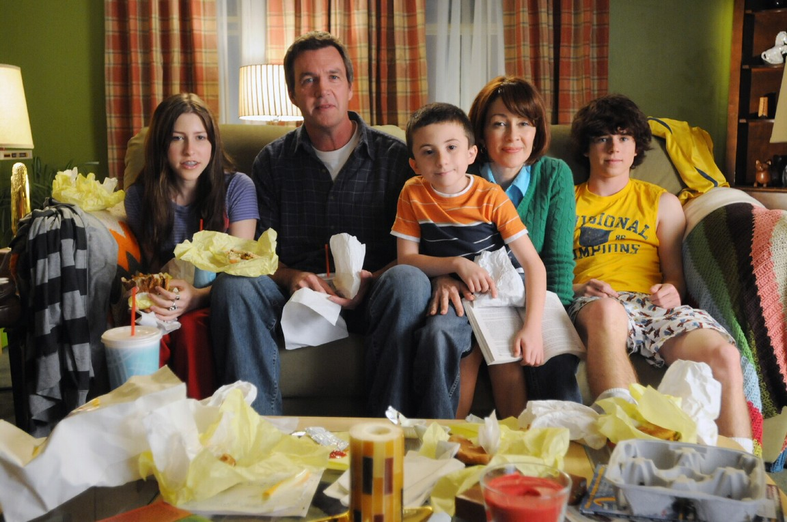
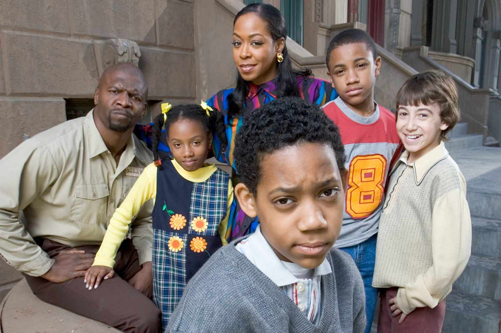

Show 1: Young Sheldon
Young Sheldon is a sitcom that features a brilliant young boy and his hectic life with his family in Texas.

Show 2: The Middle
The Middle is also a sitcom featuing a family's life troubles circling around their mother.

Show 3: Everyone hates Chris
Everyone hates Chris is a sitcom that features an eldest son of a family being hatered and targeted by his family.
